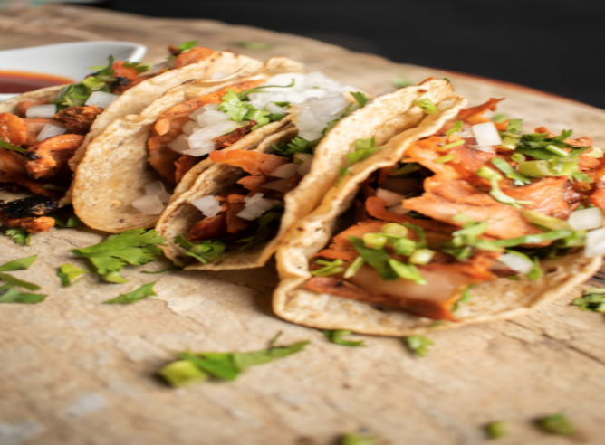
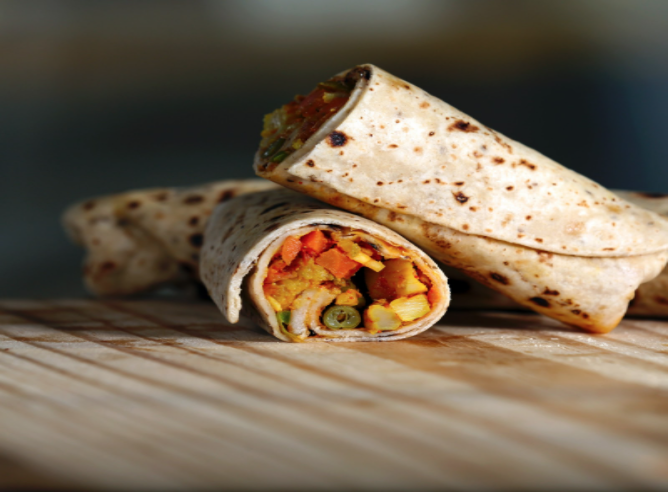
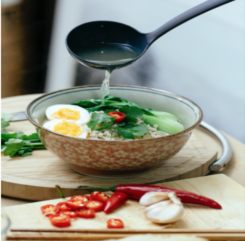
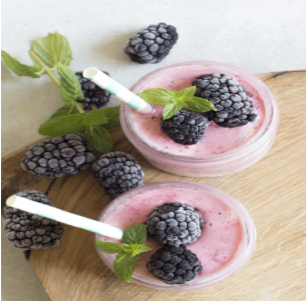

The Cooking Ranch
About
Recipes
Contact
Log-In
Farm To Table Fresh
Vegan Tacos
Here’s a delicious, flavourful, and summery vegan taco recipe for ya! Made with a simple vegan ingredients. It’s simple yet colourful and so flavourful. The perfect dinner for an evening fiesta.

Peruvian Burritos with Aji Verde Sauce (Vegan)
These Peruvian Burritos with Aji Verde (Spicy Peruvian Green Sauce) are not only vegan, they are also DELICIOUS! Filled with healthy veggies – they are satisfying, highly nutritious yet full of so much flavor!

Vegan Ramen with Miso Shiitake Broth
Sumptuous and oozing with flavor, a good bowl of Ramen is pure comfort food. Here’s a recipe for Vegan Ramen that is made with a flavorful, rich Miso Shiitake Broth. Deeply satisfying and nurturing!

Mixed Berry Smoothie
This recipe for a mixed berry smoothie is a refreshing and healthy combination of fruit that’s kid-approved and super easy to make! Smoothies are a great choice for breakfast or as a mid-day snack.
